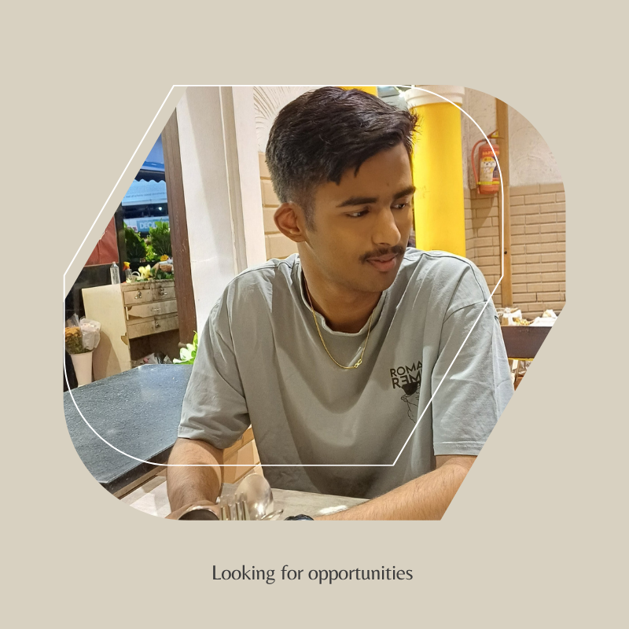
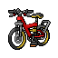
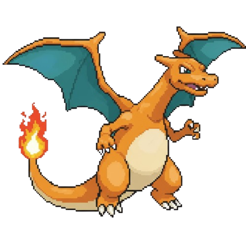
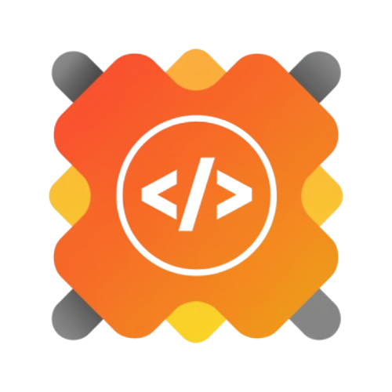
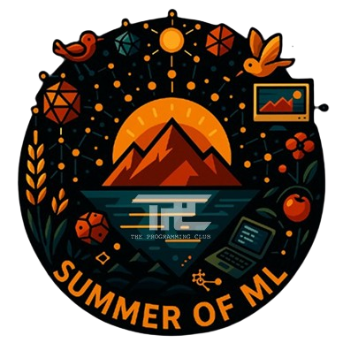
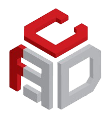
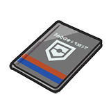
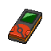

While I mainly play Pokémon, my favorite non-Pokémon games would be Clash of Clans or Clash Royale.

My favorite has always been Charizard. It was my first ever starter in Pokémon FireRed, and it's a nostalgic powerhouse that remains my top choice.
I honestly love them all! But if I have to pick just one, it's Pokémon Emerald. The storytelling and unique tone of that specific generation truly set it apart and cemented it as my favorite.
My current focus is Data Analysis and Business Intelligence: Python, SQL / MySQL, Power BI, DAX, Power Query, ETL, data modeling and visualization. I still explore Machine Learning, Python development, Git/GitHub and open-source collaboration.
Took on a maintainership and mentorship-oriented role through the Recode Hive PA, contributing to project development while helping maintain repositories, review contributions and support other contributors.

Registered a project under GSSoC and took responsibility for maintaining its repository while contributors work on it, keeping project activity organized and supporting contribution workflow.
Contributed features, documentation and visual fixes to open-source projects. Collaborated through issues, pull requests and GitHub workflows.

Improved open-source projects through feature work, bug fixes, documentation, issue creation and pull requests, including updates to standard issue and PR templates. Earned Super Contributor status with 13 accepted PRs and the Treenation Badge.

Built early practical experience in data cleaning, analysis and visualization. Implemented and tested ML models while strengthening Git and GitHub fundamentals.

Designed and prototyped 3D models with CAD and 3D-printing techniques. Practised low-fidelity prototyping, Design Thinking and engineering applications in Autodesk Fusion 360.

A growing record of work across data cleaning, visualization, ML experiments, CAD prototypes and dashboard thinking, connecting the engineering starting point to the current analytics focus.
